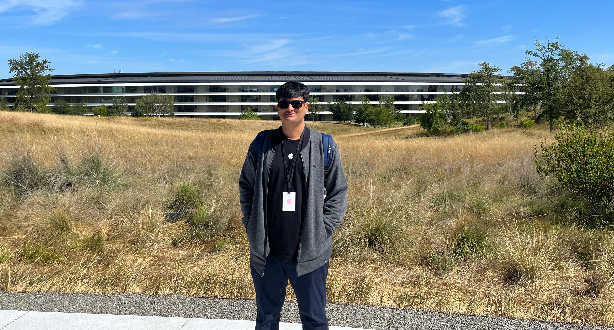

Work

Software Engineering Intern @ Apple
During my tenure as a Software Engineer Intern at Apple within the AppleCare Engineering team, I had the privilege of working on a range of impactful projects that significantly contributed to the team's efficiency and operational excellence. One of my notable achievements was the design, implementation, and deployment of a cutting-edge software update notification and alerting system. This system was designed to continuously monitor and automatically retrieve release versions for all Apple products from an encrypted data store as soon as they became available. It then promptly disseminated organization-wide Go Live emails to stakeholders, ensuring timely awareness of critical updates.
In addition to this, I took full ownership of a web dashboard that served as the interface for this alerting system. Leveraging a technology stack that included Python, Django, JavaScript, HTML/CSS, PostgreSQL, Kubernetes, and Jenkins, I crafted a feature-rich dashboard. It incorporated essential functionalities such as OAuth 2.0 SSO login, rich text editing, save state capabilities, JIRA ticket creation, and fine-grained access control, enhancing the overall user experience and usability of the platform.
Furthermore, I played a pivotal role in streamlining and modernizing the team's toolset by leading the deprecation of five mission-critical legacy tools. This involved decoupling and replacing them with scalable Python microservices on Kubernetes, coupled with Jenkins CI/CD integration. The transition not only significantly increased throughput but also improved latency by 75 ms during peak usage, ensuring our tools operated at peak performance.
My commitment to collaboration extended beyond development work, as I actively engaged with Product Managers and conducted knowledge transfer sessions for cross-functional teams. This effort aimed to standardize the format for Go Live emails across Apple, promoting consistency and efficiency in communication processes and ensuring the seamless adoption of the alerting system throughout the organization.
My experience in the AppleCare Engineering team provided invaluable insights into the complex world of software engineering at scale, and I am proud to have played a role in enhancing operational efficiency and communication within this esteemed organization.
Software Engineer 2 @ EagleView
During my role as a Software Engineer 2 in the Data Extraction team at EagleView, I took on a leadership role in engineering, development, and ownership of critical components that powered the EagleView Assess ML pipeline. This involved crafting the entire Go and Python orchestration service, designing the Kubernetes architecture, and establishing the Jenkins CI/CD pipeline. These foundational contributions facilitated AI-powered damage detection in real estate imagery, earning me the prestigious Above & Beyond Performance Award from the CEO in recognition of my outstanding contribution.
Within the ML workflow, I implemented a range of state-managed features that significantly improved efficiency. These included functionalities like pause, restart from failed nodes, rerun capability, log retrieval, and DAG (Directed Acyclic Graph) updates. Leveraging Python, Kafka, Airflow, Redis, and PostgreSQL, these enhancements successfully eliminated all damage report generation delays resulting from failed runs.
Additionally, I programmed a versatile API suite using Python, Flask, OpenCV, Ray, and S3. This suite was designed to partition high-resolution real estate images into smaller tiles, enabling efficient multiprocessing. The deployment of this solution as a scalable Kubernetes microservice resulted in a remarkable 35% reduction in turnaround time for generating damage reports, enhancing productivity and responsiveness.
My dedication to ownership, adaptability, and effective communication led to the successful and swift transition of EagleView Assess to production within a mere 6 months. This accomplishment was recognized with the prestigious Above & Beyond Performance award from the CEO, highlighting my commitment to excellence and my ability to drive critical projects to success.
Software Developer @ Graphene AI
During my tenure as a Software Engineer in the AI Infrastructure team at Graphene AI, I played a pivotal role in designing and implementing the foundational system infrastructure and CI/CD pipeline. This involved utilizing a versatile tech stack including Python, Flask, Kafka, Spark, Airflow, MySQL, and Google Cloud Platform (GCP). My contributions were instrumental in supporting a data-intensive ML system known as Mavis AI. Mavis AI leverages NLP (Natural Language Processing) to automate market research and deliver unbiased product insights, enabling data-driven decision-making within the organization.
As a leader in the team, I spearheaded efforts to develop Python connectors, enabling seamless integration of critical modules such as Parts-Of-Speech, Named Entity Recognition, and Sentiment Analysis with Kafka and Spark. This integration significantly improved data processing speed, increasing it from 2000 words per minute (wpm) to an impressive 50000 wpm. This optimization was crucial for enhancing the efficiency of data processing workflows within Mavis AI.
In addition to my design and development responsibilities, I took on the role of maintaining and ensuring the reliability of the Mavis AI engine's production environment. This involved promptly identifying, debugging, and hotfixing issues as they arose, as well as providing on-call support to ensure uninterrupted operations. To enhance the overall codebase quality, I worked on improving unit test coverage, achieving an impressive 89% coverage rate. Furthermore, I conducted regular load testing for the infrastructure, utilizing tools such as Postman and JMeter to assess and optimize system performance.
Software Engineering Intern @ MySmartPrice
During my role as a Software Engineer Intern in the Web Applications team at MySmartPrice, I had the opportunity to contribute significantly to the development of the MySmartPrice Google Chrome Extension. Leveraging JavaScript and Chrome DevTools, I played an instrumental role in crafting this extension, which has since garnered an impressive user base of over 1 million active users spanning diverse product categories.
As part of this project, I collaborated closely with the development team to create a user-friendly browsing experience. Our goal was to empower users with the ability to easily compare prices, track discounts, and make informed purchasing decisions while browsing online. This approach led to widespread adoption of the extension and garnered positive feedback from users who found value in its features, ultimately contributing to the extension's success.
About
Hello there! Welcome to my world of interests and accomplishments. I love nature and animals, with a special fondness for cats and dogs. When I'm not surrounded by furry friends, you can usually find me sipping on a cup of coffee and exploring the realms of technology.
Writing holds a special place in my heart, particularly when it comes to crafting fiction and stories inspired by my own life. I express my creativity through two blogs, Nothing Can Stop Our March and The Pathfinder 42.
I am a huge fan of MOBA games and I spend a lot of my free time assembling gaming PCs from scratch.
Thrillers and murder mysteries are my go-to genres when it comes to reading. There's something captivating about unraveling intricate plots and uncovering secrets within the pages of a gripping book.
When it comes to music, my favorite band is Green Day. Their punk energy has always inspired me to be my own true self. I also enjoy listening to Linkin Park, Red Hot Chili Peppers, Pink Floyd, and Nirvana. And yes, Taylor Swift's music is a guilty pleasure of mine too.
I can proudly call myself a HUGE Seinfeld fan. Serenity now, insanity later.
Speaking of technology, I've had the privilege of achieving notable milestones in this field. In the Science Olympiad, I secured a place among the top 500 students in South East Asia, showcasing my passion for scientific exploration. Furthermore, my exceptional performance in the CBSE national exams earned me the honor of being felicitated by the Education Minister of India. In 2018, I was recognized with the prestigious AMD Best Student Project Award for my Bachelor's project, which contributed to the advancement of Smart Cities. This recognition motivated me to further pursue my passion. I even submitted a paper on the same project to the 2019 Conference on Computer Vision and Pattern Recognition in Long Beach, California, demonstrating my commitment to innovation. Professionally, I earned the Above & Beyond Performance award during my time at EagleView, showcasing my dedication and exemplary work ethic.
Join me on this exciting journey as I continue to explore my passions, make new discoveries, and embrace the wonders that life has to offer.